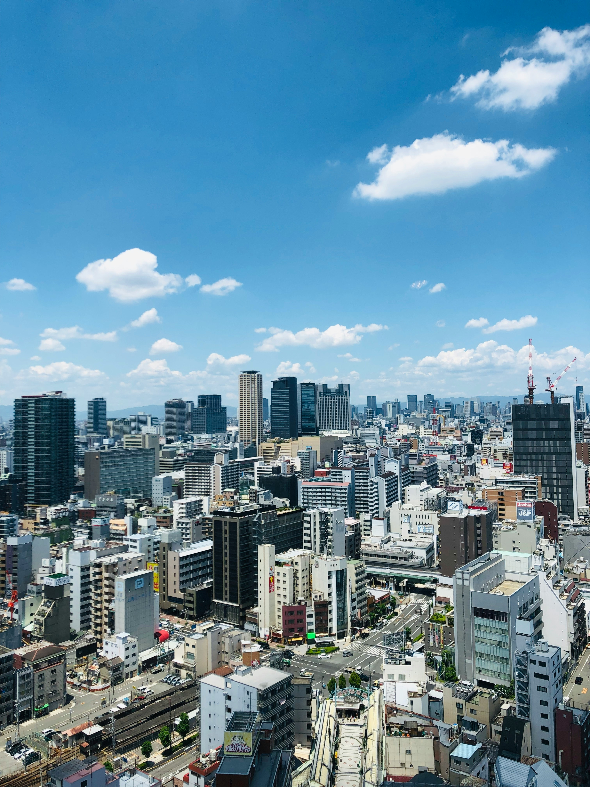
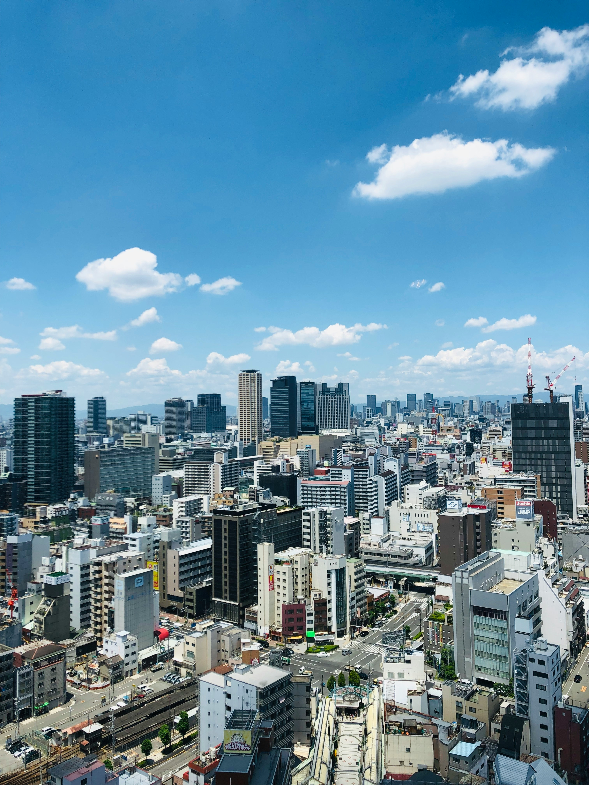

Discover Japan: A Land of Boundless Opportunities
Welcome to the heart of the Land of the Rising Sun, where ancient tradition meets cutting-edge innovation. At "Work Opportunities in Japan," we invite you to explore the captivating essence of Japan beyond its iconic landscapes and bustling cities.
Unveil Japan's Rich Cultural Tapestry
Dive into Japan's rich cultural tapestry, where every aspect of life is woven with intricate customs and time-honored traditions. From the graceful art of tea ceremony to the spirited festivals celebrating the seasons, Japan's cultural heritage is a treasure trove waiting to be explored.
Experience Japan's Dynamic Work Culture
Step into the dynamic realm of Japanese work culture, renowned for its dedication to precision, teamwork, and continuous improvement. Whether you're drawn to the fast-paced environment of Tokyo's corporate hubs or the tranquil serenity of rural communities, Japan offers a spectrum of opportunities tailored to your career aspirations.
Indulge in Japan's Culinary Delights
Embark on a gastronomic journey through Japan's culinary landscape, where each dish is a masterpiece crafted with meticulous attention to detail. From the delicate flavors of sushi and sashimi to the hearty comfort of ramen, Japan's cuisine reflects its diverse regions and centuries-old culinary traditions.
Embrace Japan's Natural Beauty
Immerse yourself in Japan's natural beauty, where lush forests, towering mountains, and pristine coastlines beckon adventurers and nature enthusiasts alike. Whether you're exploring the iconic cherry blossoms in spring or soaking in the tranquil serenity of hot springs in winter, Japan's scenic wonders offer endless opportunities for exploration and rejuvenation.
Prepare for Your Journey
As you embark on your journey to Japan, arm yourself with essential resources and practical tips to make your transition seamless. From visa information and language learning tools to insights on navigating daily life in Japan, our useful resources section equips you with the knowledge needed to thrive in your new environment.
Join Us in Embracing Japan's Work Opportunities
At "Work Opportunities in Japan," we are dedicated to connecting individuals from around the globe with the diverse array of work opportunities that Japan has to offer. Whether you're seeking career advancement, cultural immersion, or personal growth, Japan welcomes you with open arms to embark on an unforgettable journey of discovery.
 
